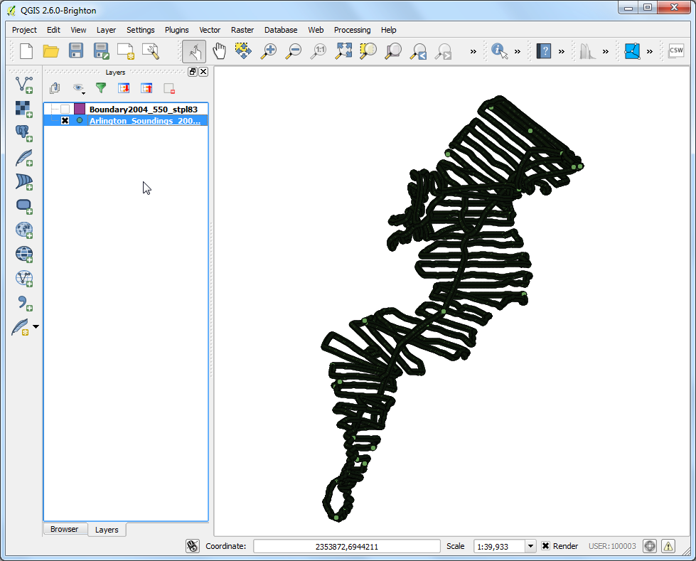
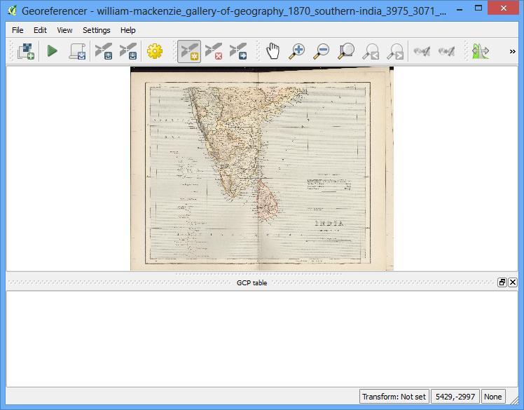

Interpolarea Datelor de tip Punct
[ Download PDF A4 Letter ]
Interpolarea este o tehnică GIS frecvent utilizată pentru a crea suprafețe continue de puncte discrete. O mulțime de fenomene din lumea reală sunt continue - elevațiile, solurile, temperaturile etc. Dacă dorim să modelăm aceste suprafețe pentru ale analiza ulterior, este imposibil să efectuăm măsurători pe întreaga suprafață. Astfel, măsurătorile din teren se fac în diverse puncte, de-a lungul suprafeței, iar valorile intermediare sunt deduse printr-un proces numit ‘interpolare’. În QGIS, interpolarea este realizată cu ajutorul Pluginului de Interpolare nativ.
Privire de ansamblu asupra activității
Vom folosi datele măsurate în teren pentru Lacul Arlington din Texas și vom crea o hartă a elevației reliefului și a curbelor de nivel.
Alte competențe pe care le veți dobândi
Crearea curbelor de nivel cu ajutorul datelor de tip punct.
Mascarea valorilor nule dintr-un strat raster.
Adăugarea etichetelor în straturile vectoriale
Procedura
Deschideți QGIS. Mergeți la

Navigați la fișierul descărcat Shapefiles.zip și selectați-l, Clic pe Open.

În fereastra de dialog Select layers to add..., țineți apăsată tasta Shift, apoi selectați straturile Arlington_Soundings_2007_stpl83.shp și Boundary2004_550_stpl83.shp. Clic pe OK.

Veți vedea 2 straturi încărcate în QGIS. Stratul Boundary2004_550_stpl83 reprezintă limitele lacului. În Cuprins, debifați căsuța de lângă acesta.

În acest fel, veți putea observa datele celui de-al doilea strat Arlington_Soundings_2007_stpl83. Ceea ce se vede arată similar unor linii, dar de fapt este doar o serie de puncte foarte apropiate.

Efectuați clic pe pictograma Zoom și selectați o mică arie de pe ecran. Pe măsură ce veți mări imaginea, veți observa punctele. Fiecare punct reprezintă o citire luată de o Sondă de Adâncime într-o locație înregistrată de un echipament DGPS.

Selectați instrumentul Identify și faceți clic pe un punct. Veți vedea panoul cu Rezultatele Identificării apărând în partea stângă, alături de valoarea atributului punctului. În acest caz, atributul ELEVAȚIE conține adâncimea lacului la acea locație. Deoarece sarcina noastră este de a crea un profil de adâncime și curbele de nivel, vom folosi aceste valori ca intrare pentru interpolare.

Asigurați-vă că Plugin-ul Interpolare a fost activat. Parcurgeți Utilizarea Plugin-urilor pentru a vedea cum se activează plugin-urile. După activare, mergeți la .

În fereastra de dialog Interpolation, selectați Arlington_Soundings_2007_stpl83 pentru Vector layers în panoul Input. Selectați ELEVATION ca Interpolation attribute. Apăsați Add. Schimbați valorile Cellsize X și Cellsize Y la 5. Această valoare este dimensiunea fiecărui pixel din grila de ieșire. Deoarece datele noastre sursă sunt într-un CRS proiectat, cu unități Feet-US, pe baza selecției noastre, dimensiunea grilei va fi de 5 metri. Faceți clic pe butonul ... de lângă Output file și denumiți fișierul de ieșire ca elevation_tin.tif. Faceți clic pe OK.
Note
Interpolation results can vary significantly based on the method and
parameters you choose. QGIS interpolation supports Triagulated Irregular
Network (TIN) and Inverse Distance Weighting (IDW) methods for interpolation.
TIN method is commonly used for elevation data whereas IDW method is used
for interpolating other types of data such as mineral concentrations,
populations etc. See the Spatial Analysis
module of the QGIS documentation for more details.

Veți vedea noul strat, elevation_tin, încărcat în QGIS. Efectuați clic-dreapta pe strat, apoi selectați Zoom to layer.

- Now you will see the full extent of the created surface. Interpolation does
not give accurate results outside the collection area. Let’s clip the
resulting surface with the lake boundary. Go to .

- Name the Output file as elevation_tin_clipped.tif. Select the
Cliiped mode as Mask layer. Select
Boundary2004_550_stpl83 as the Mask layer`. Click
OK.

- A new raster elevation_tin_clipped will be loaded in QGIS. We will now
style this layer to show the difference in elevations. Note the min and max
elevation values from the elevation_tin layer. Right-click the
elevation_tin_clipped layer and select Properties.

- Go to the Style tab. Select Render type as
Singleband pseudocolor. In the Generate new color map
panel, select Spectral color ramp. As we want to create a depth-map as
opposed to a height-map, check the Invert box. This will assign
blues to deep areas and reds to shallow areas. Click Classify.

- Switch to the Tranparency tab. We want to remove the
black-pixels from our output. Enter 0 as the Additional no
data value. Click OK.

- Now you have a elevation relief map for the lake generated from the
individual depth readings. Let’s generate contours now. Go to
.

- In the Contour dialog, enter contours as the
Output file for contour lines. We will generate contour lines
at 5ft intervals, so enter 5.00 as the Interval between
contour lines. Check the Attribute name box. Click
OK.

- The contour lines will be loaded as contours layer once the processing
is finished. Right-click the layer and select Properties.

- Go to the Labels tab. Check the Label this layer
with box and select ELEV as the field. Select Curved as the
Placement type and click OK.

Veți vedea că fiecare curbă de nivel va fi etichetată în mod corespunzător, afișând cota de-a lungul liniei.